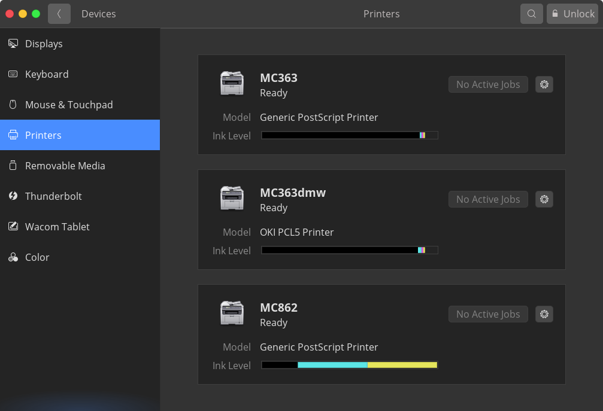
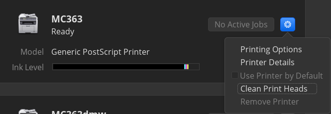

2. Device in Lab¶
2.1. 813号室プリンター¶
MC332
MC363
の2つが稼働している。MC363の方はかなり古く、紙詰まりを起こしやすいのでMC332を推奨する。
2.1.1. 手順¶
以下より、対応するプリンターのドライバーをダウンロードしてください。
その後、設定→Device→プリンターと進み

右上のUnlockをクリック、パスワードを入力することで新しいプリンターの追加ができるようになる。
下の欄にプリンターのipアドレス(プリンター本体に書いてあることが多い)を入力すると、プリンターの候補が現れるはず。(ipアドレスはなくても追加できる場合がある)
追加したプリンターの歯車アイコン→Printer Detailsと進み
Addressの欄にはプリンターのipアドレスを入力
またSelect from Database...を選び、下の画像のようにOkiのPCL5ドライバーを選択
また歯車アイコン→Printing Optionsと進み

DuplexerはONにしておく。
(正しくドライバーが設定できていれば以下のような表示になるはず、その時はColorをColor Printerにしたり、Duplex UnitもONにしよう）
以上でプリントできるはずだができなかったら田中まで。
2.2. 816-2(817?)号室プリンター¶
インストールパッケージは、いろいろ配布されているようだが、簡易インストーラを利用するのが一番いいみたい。
HL-4570のドライバーサイト にアクセス
Linux, rpm を選んで、ユーティリティソフトから Linux簡易インストーラを選択し、適当な場所へダウンロードする。
以降は画面の指示に従えばいいが、ここにも書いておく
# ダウンロードディレクトリに移動
cd ~/Downloads
# 展開
tar xvf linux-????
# プリンター名(HL-4570)を追加して実行
bash linux-???? HL-4570
途中の質問にはすべてyes(y)で答えていけばよく、最後、プリンターと接続するところで、ipアドレスを指定を選択し、ipアドレス 192.168.101.101 を入力。
プリンターが追加される。